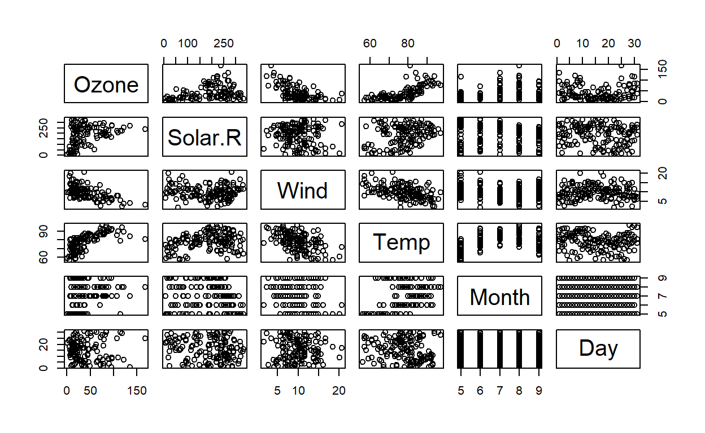
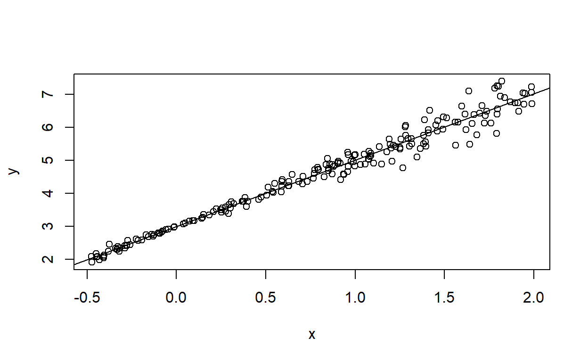
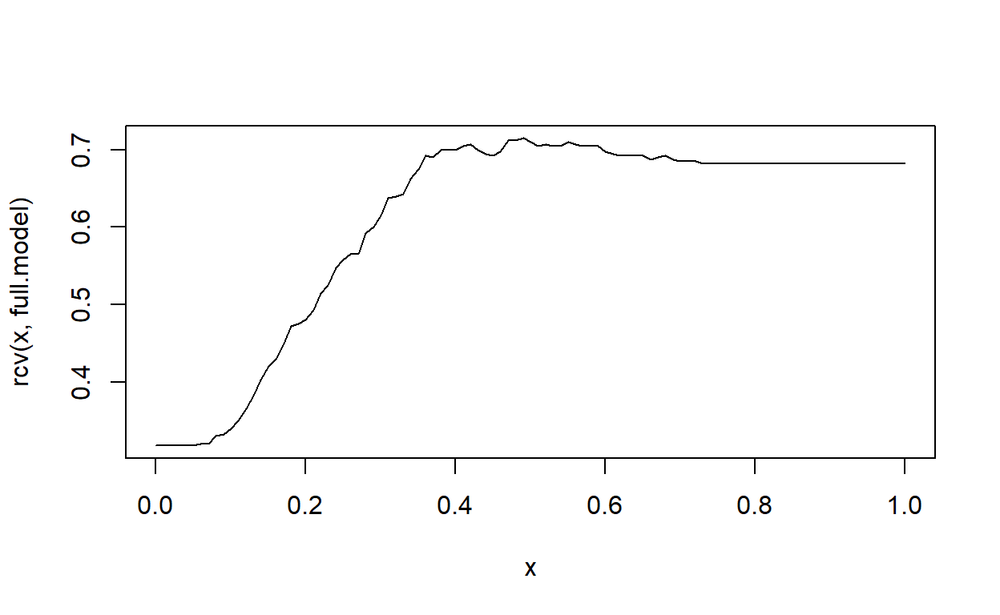
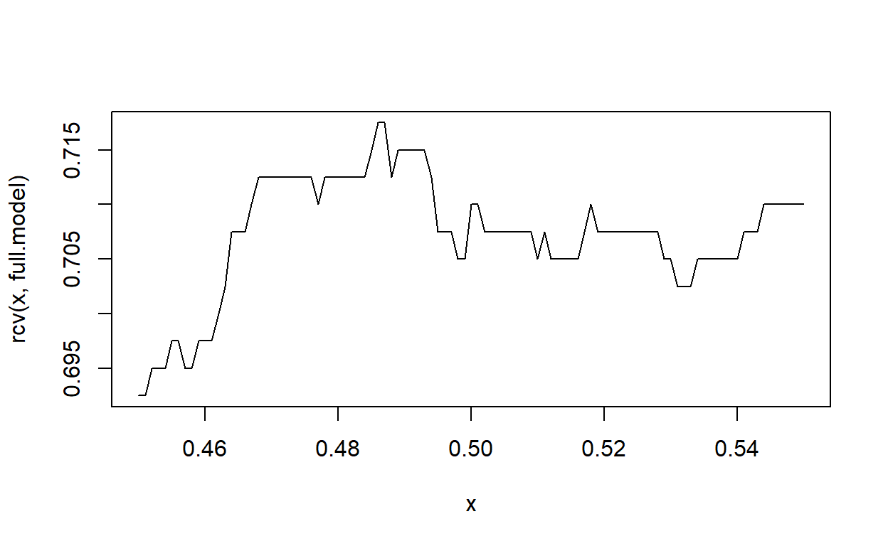

This tutorial is designed to provide some basic (hopefully review) background material on linear regression along with some practical examples.
Let’s start with a review of the idea behind linear regression. It is assumed that most of this is review and a number of terms will not be formally defined
Regression
Let’s start with some interesting data with variables that might exhibit a reasonably linear relationships. Using Nitika’s rpub as inspiration, our first example will utilize the built-in airquality dataset (see help(topic="airquality") for more details). Let’s first look at the relationship between the various variables using the pairs() function:

When Temp is used as the explanatory variable and Ozone as the response variable the resulting scatterplot shows a positive association:
Notice our use of ~ in the plot() function up above. In simple linear regression R uses the function lm() and model notation which has the response variable on the left and the explanatory on the right: response~explanatory. Since the response variable is traditionally represented as the y-variable and the explanatory as the x-variable this can cause a bit of confusion when used in plot().
Linear models
We can use any line as a model for the relationship between Temp and Ozone, but some lines are better than others. In the interactive graph below the “residual bars” represent the distance from each data-point to the proposed line. The sum of the squares of these lengths is called the sum of squares for the line and represents a measure of goodness of fit:
The line of regression or line of best fit is the unique line (we don’t prove uniqueness in this class… but it is) that minimizes the sum of squares.
We can view this line as a model with two parameters:
- the intercept, and the
- the slope.
The values that we calculate from the data are an approximation to the true values that express the actual linear relationship (as much as there is one) between the Temperature in New York in 1973 and the Ozone levels.
We can use the linear model to:
- Describe, or to
- Predict.
If the prediction occurs within the range of previously observed values (in this case between around 50 degrees F and 100 degrees F) then this is a form of interpolation. If the prediction occurs outside the range then we are extrapolating.
In classic R we use the function lm() to produce the model. Frequently we store the results in a variable and use the R command summary() for numeric information and abline() to add the line to the model:
linear.model<-lm(data=airquality,Ozone~Temp)
summary(linear.model)##
## Call:
## lm(formula = Ozone ~ Temp, data = airquality)
##
## Residuals:
## Min 1Q Median 3Q Max
## -40.729 -17.409 -0.587 11.306 118.271
##
## Coefficients:
## Estimate Std. Error t value Pr(>|t|)
## (Intercept) -146.9955 18.2872 -8.038 9.37e-13 ***
## Temp 2.4287 0.2331 10.418 < 2e-16 ***
## ---
## Signif. codes: 0 '***' 0.001 '**' 0.01 '*' 0.05 '.' 0.1 ' ' 1
##
## Residual standard error: 23.71 on 114 degrees of freedom
## (37 observations deleted due to missingness)
## Multiple R-squared: 0.4877, Adjusted R-squared: 0.4832
## F-statistic: 108.5 on 1 and 114 DF, p-value: < 2.2e-16with(airquality,{
plot(Ozone~Temp,
xlab="Temp (degrees F)",
ylab="Ozone (ppb)",
main="New York air quality May to September of 1973")
abline(linear.model)
})Linear Regression Exercise
In the code exercise below perform the following actions:
- Determine how many
NA’s exist in theOzonevariable ofairqualityand store in a variable calledn.NAs - Using the
lm()function in R, find the line of best fit for the relationship betweenWindandOzone. Store the model in a variable calledmy.model. - Use
abline()to add the line of best fit to the graph
n.NAs<-#Your code here
with(airquality,{
plot(Ozone~Wind,xlab="Wind Speed (mph)",ylab="Ozone (ppb)",main="New York air quality May to September of 1973")
abline("stuff here")
})Testing the model
For any pair of variables it is always possible to make a line of best fit. The utility of that line depends upon the actual relationship between the two variables. For example data that follows a nice quadratic relationship (think parabola) will still have a line of best fit but it might not be particularly useful:
One way to determine the appropriateness of the model is to look at the residual plot which plots the residuals against the fitted values. Recall that for each data point the observed value is the data itself, the fitted value (also known as the predicted value) is value predicted for the response variable by plugging in the value of the explanatory variable into the model, and the residual is the difference between the observed value (the data) and the predicted (or fitted value)).
In a good model there is no relationship between the value of the residual and the fitted value. This is known as homoscedasticity. In a bad model the residual exhibit heteroscedasticity.
R will generate the residual plot as one of the diagnostic plots associated to a linear model, but we will use the following convenience functions to make it ourselves. As you read the code below remember that my.model was generated in the previous code chunk:
We see that there is quite a strong relationship beteen the residual and the fitted value.
Let’s look at another common problem. Below, you will clearly see that the point cloud varies in “height” for different values of \(x\). This means that there is an association between the explanatory value (of \(x\)) and the variance.

Recall the ideas of probability, distributions, and conditional probability. The key concepts that we care about are random, expected value (a measure of the center of a distribution), and variance ( a measure of the spread of a distribution).
The graph of a function must pass the vertical line test– which means, graphically, that for any given input only one output is possible. These point clouds frequently do not satisfy those requirements… instead for any given value of \(x\) (the explanatory variable) there may be multiple values in \(y\) (the response variable). For any given value of \(x\) there is a distribution of values in \(y\). When the relationship between \(x\) and \(y\) is appropriate (which I’m not going to define carefully) the line of best fit is really expressing the expected value of the distribution of \(y\) for a given value of \(x\). In other words:
\[ \mathbb{E}\textrm{(y|x)} \]
The line-of-best-fit technology (linear regression) can always be applied and used to make predictions, but the standard techniques for assessing the liklihood of those predictions relies upon constant variance (what aka… homoscedasticity). If those conditions are satisfied then confidence intervals for
- slope
- intercept
- \(\mathbb{E}\textrm{(y|x)}\)
- \(\textrm{value of y given x}\)
are all theoretically accurate. This occurs when the following relationship holds:
\[ \textrm{DATA = FIT + RESIDUAL} \] Where \(\textrm{DATA}\) is the response variable. \(\textrm{FIT}\) is the fitted value predicted by the linera model and \(\textrm{RESIDUAL}\) is the residual. Furthermore, we need
\[ \textrm{RESIDUAL} \sim N(0,\sigma^2) \]
In other words the residual (also known as the error) is normally distributed with a mean of 0 and variance of \(\sigma^2\).
When those requirements are not satisifed then the values provided by functions like summary() may not be valid.
For a dense enough point cloud, One can pick a specific \(x\) value (or very small range of \(x\)-values) and observe the corresponding \(y\) distribution (these values are an estimate for the distribution of \(y\) given \(x\) (we use the notation \(p(y|x)\)). The expected value (or mean) of \(y\) given \(x\) is not very useful if the distribution is skewed.
Packages such as ggplot2 contain code to generate
geom_smooth() confint()
Even if the conditional distributions of \(y\) are all relatively symmetric, the spread could vary from \(x\) value to \(x\) value– resulting in heteroscedasticity. Various techniques may be employed to transform the original data into a form that is closer to the requirements for a good linear model. One of these variance stabilizing transformations is to take the \(\log(y)}\) of a variables values, or \(\sqrt{y}\)
This is useful, but complicates interpretation.
Explanatory Variables
The linear in linear regression refers to the relationship between explanatory variables. The variables, themselves, can be the result of non-linear processes. A simple example would be to fit a quadratic curve. Dummy Variables are another good example
EXPAND ### Measuring model fit
We have already seen that the line of best fit in Ordinarly Least Squares regression is the one that minimizes the Sum of Squares of the error. Dividing this value by the number of observarionts \(n\) for the model results in the MSE (Mean Sum of squares of error), which is, essentially, the variance of the error terms. Also note that minimizes SSE also minimizes MSE (and vice versa). It is related to the \(r^2\) statistic.
\[ r^2 = 1 - \frac{\sum (y_i-\widehat{y_i})}{\sum{(y_i-\overline{y})}} \] Recall that if the errors are independent of the model:
\[ \begin{aligned} \textrm{OBSERVED} &= \textrm{FIT} + \textrm{ERROR}\\ \textrm{VAR(OBSERVED)} &= \textrm{VAR(FIT)}+ \textrm{VAR(ERROR)} \end{aligned} \]
Notice further that:
\[ \textrm{VAR(FIT)} = \textrm{VAR(OBSERVED)}- \textrm{VAR(ERROR)} \]
So that expression for \(r^2\) when algebraically manipulated into the form of a single fraction ends up being:
$$
r^2 = $$ In other words… \(r^2\) really is the proportion of the variance in y (the \(\textrm{OBSERVED}\) thta comes from the model \(\textrm{VAR(FIT)}\))
We all recall that \(r^2\) is a number that ranges from 0 to 1 and is also a good way of thinking about how close the data is to being on a straight line.
Also notice that under this defintiion it really does not matter how many explanatory variables are in the model.
R uses an adjusted \(r^2\) to penalize a model with more parameters.
This adjusted-\(r^2\) is one measure of whether or not a linear model is a good fit for the data.
The R package qpcr has a useful variant of \(r^2\) called Allen’s PRESS (Predicted Sum of Squares) (aka p square). The idea is to generate https://www.bmc.com/blogs/mean-squared-error-r2-and-variance-in-regression-analysis/
Recall from earlier our linear model of air quality. The PRESS() function that will calculate p-square does not seem to deal well with NAs so we’ll want to remov ethem:
## Loading required package: MASS## Loading required package: minpack.lm## Loading required package: rgl## Warning in rgl.init(initValue, onlyNULL): RGL: unable to open X11 display## Warning: 'rgl_init' failed, running with rgl.useNULL = TRUE## Loading required package: robustbase## Loading required package: Matrix##
## Call:
## lm(formula = Ozone ~ Temp, data = reduced.air.quality)
##
## Residuals:
## Min 1Q Median 3Q Max
## -40.729 -17.409 -0.587 11.306 118.271
##
## Coefficients:
## Estimate Std. Error t value Pr(>|t|)
## (Intercept) -146.9955 18.2872 -8.038 9.37e-13 ***
## Temp 2.4287 0.2331 10.418 < 2e-16 ***
## ---
## Signif. codes: 0 '***' 0.001 '**' 0.01 '*' 0.05 '.' 0.1 ' ' 1
##
## Residual standard error: 23.71 on 114 degrees of freedom
## Multiple R-squared: 0.4877, Adjusted R-squared: 0.4832
## F-statistic: 108.5 on 1 and 114 DF, p-value: < 2.2e-16## .........10.........20.........30.........40.........50
## .........60.........70.........80.........90.........100
## .........110......## $stat
## [1] 65944.17
##
## $residuals
## [1] 25.7892245 8.2271809 -20.9393851 14.9072856 15.0354518
## [6] 12.4360833 23.7229498 7.1011396 -25.9902405 -4.6606594
## [11] -2.3512167 -4.2326783 25.3149514 5.7139853 21.1719230
## [16] 15.3372823 12.0612136 7.6686741 4.9134541 -19.5128028
## [21] 2.9512108 32.0007123 7.4210996 -4.7751612 70.7465338
## [26] -0.5912572 -23.3984497 -0.6015453 -25.7307718 -29.4607007
## [31] -19.1814260 9.2392770 9.3603258 -18.5017689 -24.8082145
## [36] 78.9516918 -10.5875706 -17.9007349 9.5193856 -14.7515613
## [41] 10.4635614 21.1450469 21.1450469 16.1739407 -20.5238367
## [46] -22.9490325 -40.6691907 -1.7461826 -17.3361988 4.0338340
## [51] 14.9475625 3.6044893 -16.8987009 18.4031944 49.2218247
## [56] -32.4918261 -10.0234207 15.5579961 -12.0538932 9.5193856
## [61] 9.3600720 -10.8331183 -41.1229037 -36.5333268 16.3727219
## [66] -24.7796305 1.7271039 53.9518402 17.8191698 39.3100040
## [71] -18.1453107 -24.4088249 17.8610275 -18.1726558 14.2525534
## [76] -14.7178156 -11.5428932 1.5701717 -19.1814260 -19.0994153
## [81] 0.1290584 119.4129592 11.2965407 -13.1679390 37.9797100
## [86] -2.2509312 3.8265792 22.5536551 1.5994348 -6.0602230
## [91] 12.5106940 -17.5951049 -25.3258671 -27.5503487 -19.6124715
## [96] -14.2918451 -6.3693622 -5.7848207 -16.7358954 -12.1200346
## [101] -16.6620999 -12.6086635 3.5875663 2.3188426 -24.8082145
## [106] 5.9510041 -36.5333268 4.6860090 -2.4750725 -13.8620968
## [111] -13.8090989 8.2341470 7.0898255 -21.3583917 -19.7630151
## [116] 1.8775312
##
## $P.square
## [1] 0.4730497Logistic Regression
With Generalized Linear Models (see the Mathematical Background for more details) we can attempt to make predictions about point-clouds that do not have a nice linear relationship.
One common situation arises when there is some sort of a yes/no question (the response) where the probability of “success” (getting a “yes”) can change based upon the explanatory variables.
In the simplest situation we have one continous explanatory variable, \(x\), and one response variable \(y\). We use the following coding:
| Result | Code |
|---|---|
| \(\textrm{no}\) | 0 |
| \(\textrm{yes}\) | 1 |
For any given observation \(i\) there is a probability (based upon \(x_i\)) of \(\pi_i\) for getting a 1 and \(1-\pi_1\) of getting a 0. All the observations with the same value of \(x\) should have the same probability of getting a 0 (or a 1). If we group all the observations with the same values for \(x\) we can think of the data as having \(m\) bins. The distribution of \(y\) in each bin will be a Binomial distribution.
Review the Logistic Regression section of MathBackground for more information on the details. For now we will focus on being very practical.
(heavily borrowing from https://towardsdatascience.com/simply-explained-logistic-regression-with-example-in-r-b919acb1d6b3) I’d like to predict whether or not an applicant to UCLA is going to be admitted. It seems reasonable that their high school GPA, their GRE score, and the rank (a proxy for quality) of their high school will influence the probability of them being admitted.
Let’s pull the data from UCLA:
Do some basic summarization and graphical exploration of the data before proceeding. I expect to see
- numeric summaries
- graphical summaries (single variables)
- graphical summaries (like side-by-side boxplot) comparing multiple variables
Let me remind you that the goal of regression, as we have been practicing it, is to find the middle of the \(y\)-values that would result… in other words our model should be predicting the probablility. If all our model assumptions are satisfied the curve of best fit for this prediction is a logistic curve.
Our data has three explanatory variables and yes/no response.
We use the glm() function and must specify the keyword argument `family=“binomial”’. The resulting parameters tell us something about how the explanatory variables modify the “log odds”.
Let’s actually perform the logistic regression. We will start by only using gre and gpa because
##
## Call:
## glm(formula = admit ~ gre + gpa, family = "binomial", data = df)
##
## Deviance Residuals:
## Min 1Q Median 3Q Max
## -1.2730 -0.8988 -0.7206 1.3013 2.0620
##
## Coefficients:
## Estimate Std. Error z value Pr(>|z|)
## (Intercept) -4.949378 1.075093 -4.604 4.15e-06 ***
## gre 0.002691 0.001057 2.544 0.0109 *
## gpa 0.754687 0.319586 2.361 0.0182 *
## ---
## Signif. codes: 0 '***' 0.001 '**' 0.01 '*' 0.05 '.' 0.1 ' ' 1
##
## (Dispersion parameter for binomial family taken to be 1)
##
## Null deviance: 499.98 on 399 degrees of freedom
## Residual deviance: 480.34 on 397 degrees of freedom
## AIC: 486.34
##
## Number of Fisher Scoring iterations: 4What are we seeing?
The equation is predicting the log odds:
\[ \log\left(\frac{p}{1-p}\right) = -4.93 + 0.003\ \textrm{gre} + 0.755\ \textrm{gpa} \]
Note that \(p=0\) or \(p=1\) result in undefined expressions since \(\log(0)\) is undefined and so is \(\frac{1}{0}\).
Exponentiating both sides produces an equation modeling the odds:
\[ \begin{aligned} \frac{p}{1-p} &= e^{-4.93 + 0.003\ \textrm{gre} + 0.755\ \textrm{gpa}}\\ &= e^{-4.93}e^{0.003\ \textrm{gre}}e^{0.755\ \textrm{gpa}}\\ &=(0.007) 1.003^{\textrm{gre}}2.127^{\textrm{gpa}} \end{aligned} \] Increasing \(\textrm{gre}\) by 1 will multiply the RHS by 1.003. In other words it increases the odds by a factor of 1.003. The effect size might not be high… but a GRE score can vary quite a bit… increasing it by 100 increases the odds by \(1.003^{100}=1.349\). GPA on the other hand, which has a much more limited range, has a larger effect on a per-point basis (whether or not such a distinction is important I will leave for you to consider).
Notice that \(1+odds = \frac{1}{1-p}\) \[ \begin{aligned} \frac{odds}{1+odds}&= \frac{p}{1-p}\frac{1}{1+\frac{p}{1-p}}\\ &=\frac{p}{1-p}\frac{1}{\frac{1-p}{1-p}+\frac{p}{1-p}}\\ &=\frac{p}{1-p}\frac{1}{\frac{1}{1-p}}\\ &=\frac{p}{1-p}\frac{p-1}{1}\\ &=p \end{aligned} \]
So although we can turn information about the odds into information about probability… a straightforward interpretation is still a bit problematics.
Let’s train our intuition a bit by looking at just gpa:
The y-axis is quite boring– just 0/1. But by using some jitter and transparency to deal with overplotting we see that an increase in GPA really does seem to improve the probability of being accepted.
The model of this is
##
## Call:
## glm(formula = admit ~ gpa, family = "binomial", data = df)
##
## Deviance Residuals:
## Min 1Q Median 3Q Max
## -1.1131 -0.8874 -0.7566 1.3305 1.9824
##
## Coefficients:
## Estimate Std. Error z value Pr(>|z|)
## (Intercept) -4.3576 1.0353 -4.209 2.57e-05 ***
## gpa 1.0511 0.2989 3.517 0.000437 ***
## ---
## Signif. codes: 0 '***' 0.001 '**' 0.01 '*' 0.05 '.' 0.1 ' ' 1
##
## (Dispersion parameter for binomial family taken to be 1)
##
## Null deviance: 499.98 on 399 degrees of freedom
## Residual deviance: 486.97 on 398 degrees of freedom
## AIC: 490.97
##
## Number of Fisher Scoring iterations: 4So
\[ \begin{aligned} odds&=(0.0128)2.8608^{\textrm{gpa}}\\ \frac{odds}{1+odds} &= \frac{(0.0128)2.8608^{\textrm{gpa}}}{1+(0.0128)2.8608^{\textrm{gpa}}}\\ p&=\frac{1}{(78.0686)2.8608^{-\textrm{gpa}} +1} \end{aligned} \]
That’s not too shabby. If you have a 4.0 GPA your probability of acceptance is about 46% and that’s what the model predicts.
##
## 0 1
## 15 13## [1] 0.4642857## [1] 0.461779Exercise: Repeat the process above but use \(\textrm{gre}\) as the explanatory variable. Produce the model and graph the logistic curve for \(p\) with explanatory variable \(\textrm{gre}\). Check the prediction for \(\textrm{gre}=800\) against the actual sample probability.
NOTE: Up above I solved the equation for \(p\) algebraically but sometimes it is easier to just let the computer do it for us. The expression fitted.value(model) will generate the fitted values. I will redo the logistic regression using \(\textrm{gpa}\) and \(\textrm{gre}\), then produce a formula that will convert the explanatory values to the fitted values. We can then compare the output of fitted.values() to our results. Notice that we have two explanatory variables… so we’ll need to be a bit fancier in our graphing. I will use the graphing package plotly
## Loading required package: ggplot2##
## Attaching package: 'plotly'## The following object is masked from 'package:ggplot2':
##
## last_plot## The following object is masked from 'package:MASS':
##
## select## The following object is masked from 'package:stats':
##
## filter## The following object is masked from 'package:graphics':
##
## layout## (Intercept) gpa gre
## -4.949378063 0.754686856 0.002690684These three values fit into the equation:
\[ \log\left(\frac{p}{1-p}\right)=-4.944 + 0.755\textrm{ gpa}+0.003\textrm{ gre} \]
The left hand side is the log odds (aka logit). Let’s capture this in an equation. Make sure you understand how my expression matches the RHS of the equation.
Now let’s turn this into the actual probabilities:
We can use apply to apply this function to every row in the data.frame to compare our values to the fitted values:
## Min. 1st Qu. Median Mean 3rd Qu. Max.
## -1.110e-16 0.000e+00 0.000e+00 -1.353e-18 0.000e+00 1.110e-16Notice how close our values are… just a few rounding issues (-1.110e-16 and 1.110e-16 are VERY close to 0).
So… success… we understand how to do this.
Now you do the same thing, but with the full model. Be sure to put your summary into a variable called my.summary
://www.statisticalassociates.com/logistic10.htm
http://www.statisticalassociates.com/booklist.htm
Look at the first few lines of the table:
| admit | gre | gpa | rank |
|---|---|---|---|
| 0 | 380 | 3.61 | 3 |
| 1 | 660 | 3.67 | 3 |
| 1 | 800 | 4.00 | 1 |
| 1 | 640 | 3.19 | 4 |
| 0 | 520 | 2.93 | 4 |
I have highlighted the rows that were associated to admitted individuals.
Let’s build a full model (using rank as a factor()) and predict “admit” and make some predictions about admittance using our model. The idea is that we let the explanatory variables predict the probability.
Some people use logistic regression for classification. There are good arguments against this (you should follow and read that link).
But, that said, we could try it anyway… we need to make some decision… will we call a row isn the table a “yes” or a “no”. One approach would be to say that anything at or above 0.5 counts as a yes(1). And anything below counts as a no (0).
Let’s build the full model and make our predictions:
## predicted.cat
## 0 1
## 0 254 19
## 1 97 30The rows are the actual values, and the cols are the predicted values. This table is known as the confusion matrix (because the off-diagonals measure the mistakes)
You can see that for 254 cases our algorithm predicted “no” and that was the result. In 30 cases, our algorithm predicted “yes” and that was the result. In 19 cases our algorithm predicted “yes” when the true situations was “no”. And the most extreme situation mistakes occurred when we predicted “no”, but the true situation wasy “yes”
Each of the squares in the table have names:
- True Positives: The observed and predicted value were both 1 (30 of these for us)
- True Negatives: The observed and predicted value were both 0 (254 of these for us)
- False Positives: Prediction was “yes”, but observed was “no” (19 of these for us)
- False Negatives: Prediction was “no”, but observed was “yes” (97 of these for us)
False Positives are also known as type I errors and False Negatives are also known as type II errors. (Think about that for a bit in the context of what you learned in Introduction to Statistics and Hypothesis Tests)
Make the model in the console use \(\textrm{gpa}\) and \(\textrm{gre}\) as the predictors. Use 0.5 as the prediction threshold. Answer the following questions
It’s not too surprising that the number of false negatives is the highest category. If you ignored every predictor your best guess would be “no”. And this simple algorithm woudl give you the proper predictor 68.25% of the time!
Let’s call this the accuracy. In other words the number of predictions that were correct.
\[ \textrm{Accuracy} = \frac{\textrm{True Positives}+\textrm{True Negatives}}{\textrm{Total}} \]
So… in our example the “always guess no” approach has an accuracy of over 68%. Notice that the logistic regression approach from your last exercise (using a threshold of 0.5) has an accuracy of \(\frac{263+9}{400} = 68%\). Hmmm… that wasn’t very satisfying was it? Even including the rank (as a factor) only changes the accuracy to 71%
There does seem to be something fundamentally different about the two strategies… The “always say no” approach will never yield a false positive (nor a true positive). The logistic regression prediction approach is a bit more balanced.
Let’s see what effect changing our threshold has. Let’s go back to the full model and make an accuracy curve:

## [1] 0.49## [1] 0.715We can get up to 71.5% if we use 49% as a threshold… lets’ look a bit closer:

## [1] 0.486## [1] 0.7175A very minor improvement by changing the threshold to 48.6%… still that’s pretty strange.
Depending upon your purposes you might be willing to have fewer accurate predictions as long as you have fewer false positives… take, for example, a spam filter (which we’ll discuss below in the context of Naive Bayes and the bag of words model).
It is far better for some real spam slip into a persons inbox then for a real communication to be classified as spam and filtered. In that situation, we might use logistic regression and set a threshold of 0.9.
in that situation we would be far more concerned with the precision– that’s the percentage of things classified as “yes” that are correct:
\[ \textrm{Precision} = \frac{\textrm{True Positives}}{\textrm{True Positives}+\textrm{False Positives}} \] Another useful measure is recall (also known as sensitivity also known as true positive rate)- this measures the percentage of the actual positives that were labeled correctly
\[ \textrm{Recall} = \frac{\textrm{True Positives}}{\textrm{True Positives}+\textrm{False Negatives}} \]
Read that a couple of times (it always confuses me the first time I review the material). THe true positives are the cases labeled positive that are positive. The False negatives are the mislabeled actual positives. So the recall (or sensitivity) is a measure of how many of the positives are identified (ignoring false positives).
It’s easy to get a high recall– just adopt the “always say yes” strategy. Then EVERYTHING is a positive… and so the recall is always 100%.
We also have specificity (also known as the true negative rate)
\[ \textrm{Specificity} = \frac{\textrm{True Negatives}}{\textrm{True Negatives}+\textrm{False Positives}} \]
Let’s think of the possible results that could occur for test that tries to detect a disease:
| metric | interpretation |
|---|---|
| Accuracy | P(test result is correct) |
| Sensitivity | P(result is positive |
| Specificity | P(result is negative |
There’s one other common measure you might encounter… It’s called \(F1\) and it tries to balance the true positive rate and the true negative rate.
\[ \textrm{F1} = 2\left(\frac{\textrm{Precision}*\textrm{Recall}}{\textrm{Precision}+\textrm{Recall}}\right) \] Notice that if our accuracy was perfect then \(\textrm{Precision}\) and \(\textrm{Recall}\) would both be 1. In this situation \(F1\) would be 1. If either \(\textrm{Precision}\) and \(\textrm{Recall}\) is 0, then the numerator is 0 and the denominator is not 0 (they can’t both be 0 at the same time). This is actually (after some algebraic manipualtion) the harmonic mean of \(\textrm{precision}\) and \(\textrm{recall}\).
Decision Trees
Perhaps a better way to make a decision is to use something more suited to classification… such as a decision tree read this article now.
We already have the data in the df dataframe:
So, given a row in the table we follow the directions by answering a series of yes/no questions:
Let’s use the first row as an example.
- \(\textrm{gpa}<3.4\) NO (go right)
- \(\textrm{rank}\) is 2, 3, or 4. YES (go left)
- Prediction is 0
Just like the results from the logistic regression we can use the model to make a prediction.
First look at the first few predictions:
## 0 1
## 1 0.6966292 0.3033708
## 2 0.6966292 0.3033708
## 3 0.2500000 0.7500000
## 4 0.8686869 0.1313131
## 5 0.8686869 0.1313131
## 6 0.3000000 0.7000000You can see that the tree puts 70% chance that row 1 is a 0 and a 30% chance that it is a 1. We want to pick the larger of the two values. We can, fairly easily, look at the column for 1. If it is higher than 0.5 then we’ll choose 1 (since each row must add to 1). I choose higher than 0.5 instead of higher than or equal to 0.5 since there are more 0’s… so if we don’t know any better, might as well choose the more common one. Note that the innermost expression evaluates to TRUE and FALSE, but as.numeric turns FALSE to 0 and TRUE to 1:
Let’s make the confusion matrix for this classification:
## pv
## 0 1
## 0 249 24
## 1 73 54Our accuracy is \(\frac{249+54}{400} = 0.7575\). That’s better than before. Also our Type I and Type II error rates are more balanced.
Notice that it is impossible to guess everything correctly. Rows 15 and 166 on the table are identical in all respects except the value of admit:| admit | gre | gpa | rank | |
|---|---|---|---|---|
| 15 | 1 | 700 | 4 | 1 |
| 166 | 0 | 700 | 4 | 1 |
Now… MOST of the combinations of values are distinct… which means that one could, produce a very exhaustive list of special cases to make VERY accurate predictions… HOWEVER that would only work on the specific data-set and would be extremely unlikely to transfer well to new data. This problem is known as over-fitting.
However… look at the tree again and think about what it’s saying… The first thing it looks at is a student’s gpa. Is it low (below 3.4) or high? That’s the first devision. If the GPA is low than a student who does not come from a well-ranked school is weeded out. If they DO come from a higher ranked school then they’d better have a pretty impressive GRE score. A score of less than 730 rules them out… otherwise they’re in. (probabilistically speaking of course)
On the other hand.. if the GPA is higher and the school is top ranked… then the student is accepted if the school is low ranked 3 or 4 the student is rejected. After this the GPA is taken into consideration. This one gets a bit… weird If your GPA iS between 3.4 and 3.5 then you’re accepted. If your GPA is between 3.5 and 3.7 you are rejected. Otherwise your GRE is used to determine your acceptance.
Let’s add extra=1 to the prp function. This will add the number of rows correctly (and incorrectly) classified:
This provides us a better sense from whence the errors in prediction are arising…. first off– notice that no matter what occurs at the first split– a rank 3 or rank 4 school is given a best guess of 0… so in that subset… without taking anything else into consideration just saying predicting “reject” will be correct almost 79% of the time… So that’s a pretty good indicator. It’s not that the tree couldn’t decide to be more aggressive in its branching… but that defeats part of the purpose– the goal is to identify trends– simplifying patterns that tell us something meaningful about the overall system– not to blindly pursue accuracy at the cost of sensibiity.
The summary provides another way to view the rules. Note that some nodes may be “collapsed” and not appear in the graphed tree:
## Call:
## rpart(formula = admit ~ gre + gpa + rank, data = df, method = "class")
## n= 400
##
## CP nsplit rel error xerror xstd
## 1 0.06299213 0 1.0000000 1.0000000 0.07330768
## 2 0.02362205 2 0.8740157 0.9133858 0.07145859
## 3 0.01574803 4 0.8267717 1.0000000 0.07330768
## 4 0.01000000 8 0.7637795 1.0629921 0.07446567
##
## Variable importance
## gpa rank gre
## 42 36 22
##
## Node number 1: 400 observations, complexity param=0.06299213
## predicted class=0 expected loss=0.3175 P(node) =1
## class counts: 273 127
## probabilities: 0.682 0.318
## left son=2 (208 obs) right son=3 (192 obs)
## Primary splits:
## gpa < 3.415 to the left, improve=8.867821, (0 missing)
## rank splits as RRLL, improve=7.781937, (0 missing)
## gre < 510 to the left, improve=4.843976, (0 missing)
## Surrogate splits:
## gre < 610 to the left, agree=0.645, adj=0.260, (0 split)
## rank splits as RLRL, agree=0.540, adj=0.042, (0 split)
##
## Node number 2: 208 observations, complexity param=0.01574803
## predicted class=0 expected loss=0.2163462 P(node) =0.52
## class counts: 163 45
## probabilities: 0.784 0.216
## left son=4 (99 obs) right son=5 (109 obs)
## Primary splits:
## rank splits as RRLL, improve=2.731978, (0 missing)
## gre < 750 to the left, improve=2.515925, (0 missing)
## gpa < 3.235 to the right, improve=1.053296, (0 missing)
## Surrogate splits:
## gre < 530 to the left, agree=0.582, adj=0.121, (0 split)
## gpa < 3.225 to the right, agree=0.553, adj=0.061, (0 split)
##
## Node number 3: 192 observations, complexity param=0.06299213
## predicted class=0 expected loss=0.4270833 P(node) =0.48
## class counts: 110 82
## probabilities: 0.573 0.427
## left son=6 (160 obs) right son=7 (32 obs)
## Primary splits:
## rank splits as RLLL, improve=8.0083330, (0 missing)
## gre < 450 to the left, improve=1.1737770, (0 missing)
## gpa < 3.945 to the left, improve=0.5037879, (0 missing)
##
## Node number 4: 99 observations
## predicted class=0 expected loss=0.1313131 P(node) =0.2475
## class counts: 86 13
## probabilities: 0.869 0.131
##
## Node number 5: 109 observations, complexity param=0.01574803
## predicted class=0 expected loss=0.293578 P(node) =0.2725
## class counts: 77 32
## probabilities: 0.706 0.294
## left son=10 (99 obs) right son=11 (10 obs)
## Primary splits:
## gre < 730 to the left, improve=3.63727200, (0 missing)
## gpa < 2.905 to the left, improve=0.33841060, (0 missing)
## rank splits as RL--, improve=0.02221607, (0 missing)
##
## Node number 6: 160 observations, complexity param=0.02362205
## predicted class=0 expected loss=0.3625 P(node) =0.4
## class counts: 102 58
## probabilities: 0.637 0.362
## left son=12 (89 obs) right son=13 (71 obs)
## Primary splits:
## rank splits as -RLL, improve=1.4024450, (0 missing)
## gre < 650 to the left, improve=1.1404990, (0 missing)
## gpa < 3.945 to the left, improve=0.7032468, (0 missing)
## Surrogate splits:
## gpa < 3.515 to the right, agree=0.594, adj=0.085, (0 split)
##
## Node number 7: 32 observations
## predicted class=1 expected loss=0.25 P(node) =0.08
## class counts: 8 24
## probabilities: 0.250 0.750
##
## Node number 10: 99 observations
## predicted class=0 expected loss=0.2525253 P(node) =0.2475
## class counts: 74 25
## probabilities: 0.747 0.253
##
## Node number 11: 10 observations
## predicted class=1 expected loss=0.3 P(node) =0.025
## class counts: 3 7
## probabilities: 0.300 0.700
##
## Node number 12: 89 observations
## predicted class=0 expected loss=0.3033708 P(node) =0.2225
## class counts: 62 27
## probabilities: 0.697 0.303
##
## Node number 13: 71 observations, complexity param=0.02362205
## predicted class=0 expected loss=0.4366197 P(node) =0.1775
## class counts: 40 31
## probabilities: 0.563 0.437
## left son=26 (55 obs) right son=27 (16 obs)
## Primary splits:
## gpa < 3.495 to the right, improve=2.600032, (0 missing)
## gre < 500 to the left, improve=1.751006, (0 missing)
##
## Node number 26: 55 observations, complexity param=0.01574803
## predicted class=0 expected loss=0.3636364 P(node) =0.1375
## class counts: 35 20
## probabilities: 0.636 0.364
## left son=52 (26 obs) right son=53 (29 obs)
## Primary splits:
## gpa < 3.73 to the left, improve=2.8948640, (0 missing)
## gre < 690 to the right, improve=0.3878788, (0 missing)
## Surrogate splits:
## gre < 610 to the left, agree=0.582, adj=0.115, (0 split)
##
## Node number 27: 16 observations
## predicted class=1 expected loss=0.3125 P(node) =0.04
## class counts: 5 11
## probabilities: 0.312 0.688
##
## Node number 52: 26 observations
## predicted class=0 expected loss=0.1923077 P(node) =0.065
## class counts: 21 5
## probabilities: 0.808 0.192
##
## Node number 53: 29 observations, complexity param=0.01574803
## predicted class=1 expected loss=0.4827586 P(node) =0.0725
## class counts: 14 15
## probabilities: 0.483 0.517
## left son=106 (9 obs) right son=107 (20 obs)
## Primary splits:
## gre < 690 to the right, improve=0.8827586, (0 missing)
## gpa < 3.945 to the left, improve=0.5029606, (0 missing)
##
## Node number 106: 9 observations
## predicted class=0 expected loss=0.3333333 P(node) =0.0225
## class counts: 6 3
## probabilities: 0.667 0.333
##
## Node number 107: 20 observations
## predicted class=1 expected loss=0.4 P(node) =0.05
## class counts: 8 12
## probabilities: 0.400 0.600At each stage of the game the decision tree is trying to partition the data into two sets based upon some “rule. Each set is given a”prediction“. If the split can successfully improve discrimination beyond a certain threshold then it is added. There are usually restrictions on both depth and bin size. For example, the process, typically, stops trying when it reaches a depth of 30, or when the partition under consideration has 5 or fewer observations. This generates a tree that is, almost certianly, too complicated (recall what we said about over fitting earlier).
The second step is to trim the tree. The rpart function does some of this automatically– you might wish to do some more. The prune() function allows you to do this
Read this DZone article on decision trees
Exercise: Now read this article and reproduce their code (no copy-pasting allowed!) which discusses using regression trees to categorize more than just a binary response. It’s the same basic idea, but the prediction is for more than just 0 or 1. Notice that the rpart() function is using method="anova" rather than method="class"
DEFINE: CROSS-VALIDATION ERROR PRESS STATISTIC MSE
## Loading required package: tidyr##
## Attaching package: 'tidyr'## The following object is masked from 'package:magrittr':
##
## extract## The following object is masked from 'package:Matrix':
##
## expand##
## Attaching package: 'dplyr'## The following object is masked from 'package:kableExtra':
##
## group_rows## The following object is masked from 'package:MASS':
##
## select## The following objects are masked from 'package:stats':
##
## filter, lag## The following objects are masked from 'package:base':
##
## intersect, setdiff, setequal, union## Loading required package: lattice##
## Attaching package: 'caret'## The following object is masked from 'package:qpcR':
##
## RMSE
 ## Random Forests
## Random Forests
This is a pretty small data set. When the data set is larger there may be conflicting choices, more noise, and other issues that make producing the optimal decision tree problematic. One approach is to pick a random subset of the data (rows and columns) and build a tree from that subset. Repeat this process many, many times. The rows are selected with replacement (This is known as bootstrapping).
I want to reiterate a few details about the random subset idea. For random forests this is more than just selecting random rows with replacement. The explanatory variables are ALSO selected at random. As the many random trees are produced, the various explanatory variables involved in the rules are monitored and a running tally of the most important variables are produced.
There are many aggregation techniques that do something similar. Bootstrap aggregation (bagging) is one such example. However, randomly producing trees can generate many trees that are too similar. This reduces the effectiveness of the technique. The random forest idea
EXERCISE: Read the following tutorial from uc-r and reproduce their example. Do NOT copy and paste.
## randomForest 4.6-14## Type rfNews() to see new features/changes/bug fixes.##
## Attaching package: 'randomForest'## The following object is masked from 'package:dplyr':
##
## combine## The following object is masked from 'package:ggplot2':
##
## margin##
## Attaching package: 'ranger'## The following object is masked from 'package:randomForest':
##
## importance##
## ----------------------------------------------------------------------
##
## Your next step is to start H2O:
## > h2o.init()
##
## For H2O package documentation, ask for help:
## > ??h2o
##
## After starting H2O, you can use the Web UI at http://localhost:54321
## For more information visit http://docs.h2o.ai
##
## ----------------------------------------------------------------------##
## Attaching package: 'h2o'## The following objects are masked from 'package:stats':
##
## cor, sd, var## The following objects are masked from 'package:base':
##
## &&, %*%, %in%, ||, apply, as.factor, as.numeric, colnames,
## colnames<-, ifelse, is.character, is.factor, is.numeric, log,
## log10, log1p, log2, round, signif, truncPOTENTIALLY Read Leo Breiman and ADele Cutler’s manual on Random Forests.
Boosted Regression
The package gbm will perform boosted regression and the summary provides a nice summary of the relative influence of the explanatory variables:
## Loaded gbm 2.1.5## Distribution not specified, assuming bernoulli ...Regression Trees
Rather than just attempting to classify, the partitioning technique can also break the explanatory-data space into subspaces… each with their own regression line… think of it as a decision tree whose leaves result in a data set and a regression on that set.
NOTE:
DISCUSS DIFFERENCE BETWEEN CLASSIFICATION TREE AND REGRESSION TREE MAKE SOME PLOTS ADD SOME EXERCISES DRAWBACKS AND SHORTCOMINGS OF THIS APPROACH (RANDOM NATURE OF CUTS TOO)
Exercise with Hint
Here’s an exercise where the chunk is pre-evaulated via the exercise.eval option (so the user can see the default output we’d like them to customize). We also add a “hint” to the correct solution via the chunk immediate below labeled print-limit-hint.
Modify the following code to limit the number of rows printed to 5:
mtcarshead(mtcars)Quiz
You can include any number of single or multiple choice questions as a quiz. Use the question function to define a question and the quiz function for grouping multiple questions together.
Some questions to verify that you understand the purposes of various base and recommended R packages:
(Borrowing heavily from Chapter 18 of John Fox’s Applied Regression Analysis and Generalized Liner Models)
The techniques we have discussed earlier are all based on an underlying model whose exact from is determined by numeric parameters. The process of regression determines reasonable values for these parameters. There are other techniques that do not
One technique that does not rely upon an underlying parametric model for the data is known as local linear regression (or loess). As with most non-parametric forms of regressin